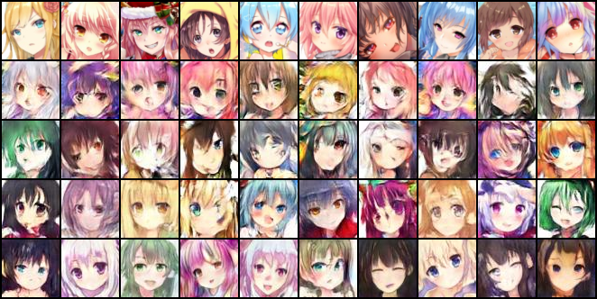
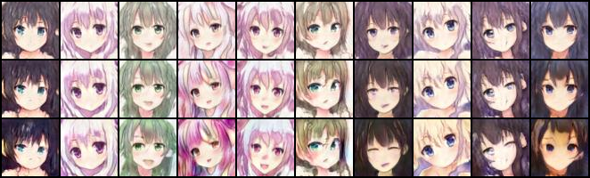

8.1 StyleGAN 改了什麼
前面三種 GAN（DCGAN、WGAN、WGAN-GP）用的是同一個生成器（第 2 章）：亂數 z 經過一層 Linear 攤成 4×4 的特徵圖，再用轉置卷積一路放大。它們的差別只在判別器與 loss。StyleGAN（Karras 等，2019）與它的改良版 StyleGAN2（2020）則從生成器的結構下手。投影片第 25 頁點出兩個重點：「First transform latent variable z to w」「Use w in different stage in generator (deal with different resolutions)」。完整一點的對照：
| DCGAN 的生成器（本作業） | StyleGAN2 的生成器 | |
|---|---|---|
| 亂數從哪裡進去 | z 只在第一層進去，攤成 4×4 | 先經過一個 mapping 網路（8 層全連接）把 z 變成 w，w 在每一個解析度都進去一次 |
| 第一層的輸入 | z 的線性投影 | 一張可學習的常數 4×4 特徵圖，和 z 無關 |
| w 怎麼影響圖 | — | 每一層卷積的權重依 w 縮放（modulated convolution）：w 控制這一層每個 channel 的「強弱」，也就是這個解析度上的「風格」（style） |
| 放大方式 | 轉置卷積（第 2 章的棋盤格問題） | 雙線性內插放大 + 一般卷積 |
| 細節的隨機性 | 全部來自 z | 每一層另外加一張逐像素的雜訊，負責髮絲這類不影響整體的細節 |
| 畫圖用的權重 | 訓練中的生成器 | 生成器權重的指數移動平均（EMA） |
直觀的理解：mapping 網路把「常態分布的亂數」轉換成一個比較好用的空間 w，而 w 被拆給不同的解析度——4×4、8×8 這些粗的層決定臉的方向、輪廓、髮型這類大結構，32×32、64×64 這些細的層決定顏色與紋理。所以 StyleGAN 可以做 style mixing：粗的層用一個人的 w、細的層用另一個人的 w，得到「A 的臉型、B 的配色」。訓練時也刻意這樣混（本書的設定有 90% 的機率混用兩個 w），逼生成器讓不同解析度的 style 各自獨立。
本書用的實作：lucidrains 的 stylegan2-pytorch
NVIDIA 官方的 StyleGAN2-ADA 需要編譯自訂的 CUDA 運算，在新版 PyTorch 上不容易裝起來（repo 的 筆記.txt 第三條：「styleGAN2 看起來在 win10 下用 python3.8 會有安裝套件的問題」）。本書用的是 lucidrains 的 stylegan2-pytorch 1.9.0：純 PyTorch、可以 pip 安裝、一行指令就能從一個圖片資料夾開始訓練。安裝時有兩件事要處理（版本與步驟見事實清單）：用 --no-deps 裝在 .venv 之外以免動到共用環境，以及它在模組最上面 import aim（一個實驗紀錄工具，只有加 --log 才用），要放一個空的 aim 模組才載得起來。從原始碼讀到的關鍵設定：
| 項目 | lucidrains 1.9.0（本書的設定） |
|---|---|
| mapping 網路 | 8 層全連接，寬 512，LeakyReLU；學習率乘 0.1 |
| 生成器 | 64×64 → 5 個解析度（4、8、16、32、64），channel 512、256、128、64、32（network_capacity 16）；每個區塊：雙線性放大 → 兩層 3×3 modulated 卷積，各加一張雜訊 → 輸出一張 RGB 疊加到上一層的 RGB |
| loss | hinge loss |
| 正則化 | 每 4 步一次梯度懲罰（權重 10、以 0 為目標，真圖與生成圖都算，第 7 章）；第 5,000 步之後每 32 步一次 path length 正則化（log 裡的 PL） |
| 優化器 | Adam，β (0.5, 0.9)；生成器 lr 2×10−4，判別器 lr 乘 1.5（TTUR） |
| EMA | 係數 0.995；第 25,000 步之前每 1,000 步把 EMA 重設成目前的權重，第 20,000 步之後每 10 步更新一次 |
| 參數量 | mapping 2,101,248 + 生成器 11,216,556；判別器 22,679,184（DCGAN：生成器 5,142,080、判別器 2,766,529） |
本書沒有改動套件的任何預設，只指定解析度、batch 與步數：
PYTHONPATH="$LIB" "$ROOT/.venv/bin/python" -c "from stylegan2_pytorch.cli import main; main()" \
--data "$ROOT/HW06/faces" --name "$NAME" --results_dir ./results --models_dir ./models \
--image_size 64 --batch_size 32 --gradient_accumulate_every 1 \
--num_train_steps 50000 --save_every 2500 --evaluate_every 2500注意它讀的是原始的 faces/（96×96），由套件自己縮成 64×64，不經過 get_dataset；所以它和前三種 GAN 的初始權重、資料順序、前處理都不同，只有資料本身相同。評分仍用第 4 章的量法（1000 張、存成 JPEG、和 real64 比），用的是 EMA 的生成器。
8.2 訓練：4 小時 18 分、約 22 個 epoch
- 速度：batch 32，每秒 3.22–3.26 步（約 104 張圖／秒），50,000 步 4 小時 18 分 37 秒。50,000 × 32 = 1,600,000 張，約 22.4 個 epoch——前三種 GAN 都是 100 個 epoch，判別器看過 7,131,400 張。
- 資源：GPU 記憶體 7.4 GB（DCGAN 約 760 MiB），每個存檔 197 MB（含 EMA 與判別器）。
- log：每 50 步印一行，共 1,000 行。前三行是
G: 5.45 | D: 0.37 | GP: 11.18、G: 1.17 | D: 5.90 | GP: 55.92、G: -0.99 | D: 2.83 | GP: 17.94；第 101 行起多了PL；最後一行G: 0.34 | D: 2.06 | GP: 0.03 | PL: 0.41。全程沒有 NaN。和第 3 章一樣，這些數字不代表圖的好壞。
8.3 結果：FID 66.3，而且還在下降
| 步數 | 2,500 | 5,000 | 10,000 | 15,000 | 20,000 | 25,000 | 30,000 | 35,000 | 40,000 | 45,000 | 50,000 |
|---|---|---|---|---|---|---|---|---|---|---|---|
| FID64（ψ 1.0） | 262.0 | 192.0 | 125.5 | 101.6 | 98.7 | 83.1 | 78.6 | 74.2 | 73.9 | 70.5 | 66.3 |
| FID64（ψ 0.75） | 268.5 | 203.6 | 130.1 | 101.8 | 106.9 | 89.0 | 87.6 | 86.1 | 82.5 | 79.7 | 76.7 |
| AFD（ψ 1.0） | 0.014 | 0.221 | 0.442 | 0.428 | 0.406 | 0.439 | 0.456 | 0.471 | 0.456 | 0.443 | 0.467 |
（每 2,500 步一個存檔，共 21 個；完整數字在事實清單。）FID 大致一路下降，第 50,000 步的 66.3 是全書最低（FID96 92.8）；換 z 種子是 66.3–68.5（第 4 章），比 WGAN 的 90.3 低了 24。曲線到最後還在往下走（第 45,000 → 50,000 步 70.5 → 66.3），再訓練下去很可能更好。中途有幾次回升（第 15,000 → 17,500 步 101.6 → 121.2、第 7,500 步 200.0），但和 DCGAN 那種崩潰不同，下一個存檔就回到下降的趨勢。
用時間來看比較公平：StyleGAN2 要到約 1 小時 56 分（第 22,500 步，FID 96.3）才追上 WGAN-GP 跑完 100 個 epoch 的水準，WGAN 只花 20 分鐘就到 90.3。換句話說，如果只有半小時，WGAN 是這四者裡最好的選擇；如果有幾個小時，StyleGAN2 會遙遙領先，而且沒有停下來的跡象。投影片估 Boss 要「< 5 小時」，和本書的經驗一致。

用眼睛看，StyleGAN2 那一列的線條最乾淨：眼睛、瀏海的邊界清楚，臉部比例也比較穩定；前三種 GAN 都能畫出臉，但常有扭曲的五官與糊掉的髮絲。這和 FID 的排名一致。
8.4 truncation ψ：在「像」與「多樣」之間取捨
StyleGAN 畫圖時常用一個技巧：先算出很多個 w 的平均 w̄（本書的套件取 2,000 個亂數），再把每個 w 往平均拉一點：
w 空間的邊緣是訓練資料比較少見的樣子，生成器在那裡畫得比較差；往中間拉，就避開了那些地方。代價是每張圖都更像平均臉，多樣性下降。同一組 z、同一個存檔（第 50,000 步），三種 ψ：
| ψ | FID64 | FID96 | AFD |
|---|---|---|---|
| 0.5 | 95.9 | 119.2 | 0.656 |
| 0.75（套件的預設） | 76.7 | 102.3 | 0.559 |
| 1.0（不截斷） | 66.3 | 92.8 | 0.467 |

ψ 越小，FID 越差（多樣性不夠，第 4 章的共變異項變大），AFD 卻越高（偵測器喜歡標準的正臉）。這也再一次說明，本書的 AFD 和 FID 量的是不同的東西：如果作業只看 AFD，最好的策略是把 ψ 調小、交一堆平均臉。StyleGAN 論文報的 FID 都是 ψ = 1.0；需要每張都「看起來沒問題」的展示用途，才會用 0.5–0.75。
8.5 全部實驗的總表
| 設定 | 最好的存檔 | FID64（1000 張） | FID64（10,000 張） | FID96 | AFD | 崩潰 | 訓練時間 | 章 |
|---|---|---|---|---|---|---|---|---|
DCGAN，照跑 train.py | 第 15 個 epoch | 105.0 | 90.8 | 134.2 | 0.366 | 多次 | 29 分（100 epoch） | 0、5 |
DCGAN，test.py 會挑的 | 第 100 個 epoch | 211.9 | 205.9 | 233.2 | 0.666 | — | 同上 | 0、5 |
| 只換 loss_G（筆記的做法） | 第 20 個 epoch | 122.9 | — | 146.7 | 0.385 | 未見（只跑 20 epoch） | 約 6 分（20 epoch） | 6 |
| WGAN loss + 保留 Sigmoid | 第 1 個 epoch | 307.8 | — | 315.4 | 0.000 | 第 5 個 epoch 起卡死 | 29 分 | 6 |
| WGAN（clip 0.01） | 第 100 個 epoch | 90.3 | 74.0 | 120.7 | 0.364 | 無 | 20 分 | 6 |
| WGAN-GP（λ 10） | 第 95 個 epoch | 94.1 | 78.4 | 123.0 | 0.362 | 無 | 44 分 | 7 |
| StyleGAN2（ψ 1.0） | 第 50,000 步 | 66.3 | 52.3 | 92.8 | 0.467 | 無 | 4 時 18 分 | 8 |
| StyleGAN2（ψ 0.75） | 第 50,000 步 | 76.7 | 64.1 | 102.3 | 0.559 | 無 | 同上 | 8 |
| 參考：1000 張真圖 | — | 31.6–32.0 | 15.8 | 59.9–60.6 | 0.40–0.46 | — | — | 4 |
（FID 都是 z 種子 0；換種子的雜訊約 ±1.5，第 4 章。每種設定都只訓練了一次，種子 2022。本書的 FID／AFD 和投影片的基準線不是同一把尺。）
8.6 如果只能挑幾件事做
- 先讓交出去的東西正確：
test.py改成產生 1000 張、設種子、清空舊的output/（第 4 章）。這不改變模型，但不改就交不出作業。 - 每個存檔都量 FID，挑最低的：同樣是照跑
train.py，挑對存檔就從 211.9 變成 105.0（第 5 章）。成本是 21 × 12 秒。 - 換成 WGAN：五處改動（第 6 章），比原版還快，FID 再降到 90.3，而且不用煩惱挑存檔。這是時間有限時 CP 值最高的一步。
- 有幾個小時，就上 StyleGAN2：不必自己寫，用現成的實作從零訓練；本書 4 小時 18 分到 66.3，還沒收斂。
- 順手的效能修正：判別器那一步加
detach()（快 15%、結果不變，第 3 章）。
現在的做法
2026 年要生成動漫頭像，多半不會從零訓練 GAN：diffusion 模型（以及它們的蒸餾版本）是主流，社群也有大量在動漫圖上微調過的模型。但這份作業的限制（不准用預訓練模型、64×64、從零開始）下，本章的結論仍然成立：訓練要穩定（WGAN 系列或現代的正則化）、生成器的結構要對（StyleGAN 的 style 注入與內插放大）、評估要有一把可靠的尺（FID，而且要知道它的雜訊與偏差）。
本章重點
- StyleGAN 改的是生成器：mapping 網路把 z 轉成 w、w 注入每一個解析度（modulated 卷積）、可學習的常數輸入、雙線性放大取代轉置卷積、逐像素雜訊、EMA 權重。
- lucidrains 的 stylegan2-pytorch 從零訓練 64×64、batch 32、50,000 步：4 小時 18 分、約 22.4 個 epoch；FID64 降到 66.3（ψ 1.0，10,000 張是 52.3），到最後都還在下降。
- 以時間計：WGAN 20 分鐘到 90.3，StyleGAN2 要約 1 小時 56 分才到 96.3；時間短選 WGAN，時間長選 StyleGAN2。
- truncation ψ：0.5／0.75／1.0 的 FID64 是 95.9／76.7／66.3，AFD 是 0.656／0.559／0.467——越截斷越像平均臉，AFD 越高、FID 越差。
- CP 值的順序：修好
test.py→ 用 FID 挑存檔（211.9 → 105.0）→ 換 WGAN（90.3，更快）→ 有時間再上 StyleGAN2（66.3）。
8.7 三級題庫
每一題都標了本書有沒有實際跑過。有跑過的，答案裡的數字來自本書的實測；沒跑過的，答案是方向與推理，需要自己驗證。
入門
入門 1（有跑過）：要交作業，test.py 最少要改哪幾件事？
三件：產生 1000 張（trainer.inference(G_path, n_generate=1000)，原本是 100）、在建 TrainerGAN 之前呼叫 utils.same_seeds(...)（否則每次的圖都不同）、指定用 FID 挑出來的存檔（而不是「最新的」）。執行前刪掉舊的 output/，免得混到上一次的檔案。1000 張打包約 1.1–1.2 MB，符合 2 MB 的限制（第 4 章）。
入門 2（有跑過）：照 trainer_gan.py:142–143 的註解打開 clipping，為什麼第一步就失敗？怎麼修？
錯誤是 KeyError: 'clip_value'：程式讀 self.config["clip_value"]，但 config.py 沒有這個鍵。在 config 裡加 "clip_value": 0.01 即可。但只打開 clipping 不是 WGAN，還要拿掉 Sigmoid、換 loss、換 RMSprop、n_critic 設 5（第 6 章）。
入門 3（有跑過）：在判別器那一步把 self.D(f_imgs) 改成 self.D(f_imgs.detach())，訓練結果會變嗎？
不會。本書實測 5 個 epoch 後的生成器與判別器權重逐位元相同，每個 epoch 從 17.2 秒降到 14.7 秒。被省掉的只有「判別器 loss 對生成器參數的梯度」，而它們本來就會在生成器那一步的 G.zero_grad() 被清掉（第 3 章）。
入門 4（有跑過）：照跑 train.py 100 個 epoch，最好的存檔是哪一個？test.py 會用哪一個？
最好的是 G_14.pth（第 15 個 epoch，FID64 105.0）；test.py 用修改時間最新的 G_99.pth（211.9），排第 9 名。中間第 19–22、25–27、31、34–35 個 epoch 發生了 mode collapse（第 5 章）。
入門 5（有跑過）：同一個模型，生成 1000 張與 10,000 張，FID 為什麼不同？哪一個比較「對」？
共變異矩陣有 2048 × 2048 個數，1000 個樣本估得不準，FID 會系統性地偏高；本書的模型多半差 14–16（崩過的 G_99 只差 6），但排名不變。兩者都「對」，只是量的條件不同；只有張數相同的 FID 才能互相比較。作業交 1000 張，所以本書用 1000 張（第 4 章）。
進階
進階 1（有跑過）：WGAN 只換了 loss、忘了拿掉 Sigmoid，會發生什麼事？為什麼？
判別器在第 5 個 epoch 之前就對所有圖都輸出 1.0000，loss_D = 0、loss_G = −1，之後 95 個 epoch 梯度全是 0，FID 卡在 336–338、AFD 全是 0。WGAN 的 loss 沒有 log，Sigmoid 又把輸出壓在 0–1：critic 與生成器一起把分數推到上限，Sigmoid 飽和（輸入超過約 17 時 float32 算出精確的 1.0），導數為 0（第 6 章）。
進階 2（有跑過）：自己寫 gp()。為什麼 torch.autograd.grad 一定要 create_graph=True？
penalty 是「梯度的大小」的函數，訓練判別器時要對它再微分一次（二次反向傳播）。不加 create_graph=True，算出的梯度不帶計算圖，penalty 對權重而言是常數，loss_D.backward() 時這一項的梯度是 0——程式不報錯，penalty 卻悄悄失效（這一點本書沒有實際跑）。實作見第 7 章；本書的 WGAN-GP 每個 epoch 26.5 秒，是 WGAN 的 2.2 倍，主要就是二次反向傳播的成本。
進階 3（有跑過）：報告第 2 題的圖，clipping 的 conv1 梯度範數是 conv4 的 157 倍，GP 只有 2.4 倍。這代表什麼？
weight clipping 讓梯度在層與層之間嚴重失衡：最深的幾層權重幾乎全部卡在 ±0.01（conv4 後面的 BatchNorm 縮放參數 100% 被截到 0.01），訊號與梯度一層一層被縮放。gradient penalty 直接約束 critic 對輸入的梯度大小（在內插點上穩定在約 1.2），各層的梯度保持同一量級。要比的是同一條線上的層間比例，不是兩條線的高低（第 7 章）。
進階 4（有跑過）：同一個 StyleGAN2，ψ 從 1.0 調到 0.5，FID 與 AFD 各怎麼變？要交作業的話選哪個？
FID64 從 66.3 變差到 95.9，AFD 從 0.467 升到 0.656。ψ 小會把每個 w 拉向平均，圖更「標準」（偵測器喜歡），但多樣性下降（FID 懲罰）。投影片的基準線同時要求 FID 與 AFD 達標，助教的偵測器又和本書不同，所以要在自己的尺上掃幾個 ψ、看兩個指標的取捨，再決定；只看 FID 就選 1.0（本章 8.4 節）。
進階 5（沒跑過）：把 config.py 的 n_critic 設成 3、其他不改（仍是原版 GAN），進度條上的 loss_G 會有什麼問題？訓練會怎樣？
進度條每 10 步印一次，但 loss_G 只在步數是 3 的倍數時重算，所以第 10、20 步印的其實是第 9、18 步的值——小問題，只影響顯示。訓練上，生成器的更新次數變成三分之一，原版 GAN 的判別器本來就太強（第 3 章），讓它多訓練幾次可能更容易壓制生成器、更早崩潰；但這需要實際跑才知道。
挑戰
挑戰 1（沒跑過）：本書的 DCGAN 只用種子 2022 跑了一次。設計一個實驗，回答「mode collapse 是不是每次都會發生」。
用同樣的設定換 3–5 個種子（改 train.py:42 的 same_seeds），各跑 100 個 epoch；每個 epoch 用第 5 章的方法（樣本格的像素標準差）記錄多樣性，每 5 個 epoch 量一次 FID。統計每次訓練「多樣性掉到 30 以下」的 epoch、最好的 FID 出現在哪個 epoch。注意：換種子同時改變了初始權重與資料順序，要分開兩者，可以給 DataLoader 一個獨立的 torch.Generator。本機每次約 30 分鐘加 4 分鐘評估。
挑戰 2（沒跑過）：把生成器的轉置卷積換成「雙線性放大 + 3×3 卷積」，會改善什麼？怎麼確認？
預期可以消除轉置卷積重疊不均造成的棋盤格紋（第 2 章），StyleGAN 系列就是這樣放大的。改法：dconv_bn_relu 換成 nn.Upsample(scale_factor=2, mode='bilinear') + nn.Conv2d(in, out, 3, padding=1) + BN + ReLU，最後一層同理。參數量會變（5×5 → 3×3）。確認方法：同樣的種子、同樣 100 個 epoch，比 FID 曲線與樣本格放大後的紋路；最好也搭配 WGAN 跑一次，把「訓練穩定性」和「上採樣方式」兩個因素分開。
挑戰 3（沒跑過）：WGAN-GP 不把 BatchNorm 換成 InstanceNorm，會怎樣？
理論上，BatchNorm 讓每張圖的輸出依賴同一批其他圖，penalty 罰的就不是「critic 對單張圖的梯度」（第 7 章）。實際影響要跑才知道：可能仍然能訓練，但 penalty 的意義變了，梯度範數的圖也會不同。實驗工具已經支援：hw06_exp.py --model_type WGANGP --norm bn --lr 1e-4 --beta1 0 --beta2 0.9 --n_critic 5，和本書的 wgangp 只差 --norm。也可以試 --norm none（完全不正規化，WGAN-GP 論文的做法之一）。
挑戰 4（沒跑過）：用 clean-fid 或 torchmetrics 重新量本書的四個最佳存檔，排名會不會變？
不同實作的縮放方式與 Inception 權重不同，FID 的絕對值一定會變（clean-fid 的作者報告過不同實作差好幾點）。但四者的差距很大（66、90、94、105），排名應該不變；WGAN 與 WGAN-GP 只差 4，是最可能互換的一對。做法：用 hw06_eval.py --keep 存下各 1000 張 JPEG，再交給其他工具；同時用 10,000 張量一次，看樣本數與實作哪一個影響比較大。
挑戰 5（沒跑過）：StyleGAN2 到第 50,000 步還在進步。如果有一整天，你會怎麼安排？
先延長同一次訓練（lucidrains 的套件會從最新的存檔接著跑，--num_train_steps 設大一點），每 2,500 步用 ψ 1.0 量 FID，直到曲線變平；本書的速度約每小時 11,700 步。其次試套件的資料增強（--aug_prob，StyleGAN2-ADA 的想法，資料少時能防止判別器過擬合），以及更大的 network_capacity。每一個改動都只改一個變數，用同一把尺（1000 張、同一組 z、同一份參考統計量）比較。
延伸閱讀
- Karras、Laine、Aila，〈A Style-Based Generator Architecture for Generative Adversarial Networks〉（CVPR 2019）：StyleGAN，mapping 網路、style 注入、雜訊、style mixing、truncation，arXiv:1812.04948。
- Karras 等，〈Analyzing and Improving the Image Quality of StyleGAN〉（CVPR 2020）：StyleGAN2，modulated／demodulated 卷積、path length 正則化、lazy regularization，arXiv:1912.04958。
- lucidrains，stylegan2-pytorch：本章用的實作，README 有所有命令列參數的說明。
- Karras 等，〈Training Generative Adversarial Networks with Limited Data〉（NeurIPS 2020）：StyleGAN2-ADA，自適應資料增強，arXiv:2006.06676。